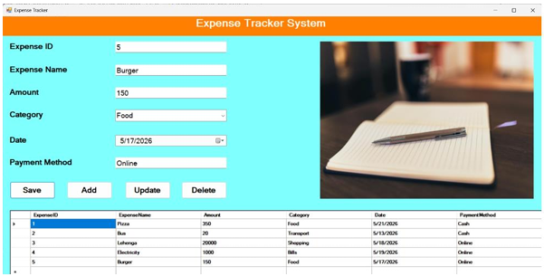

An expense tracker is a software application where users can record their income and expenses, manage their budgets, and monitor their spending. It includes features like expense categorization, budget planning, transaction history, financial reports, and savings tracking for better financial management.